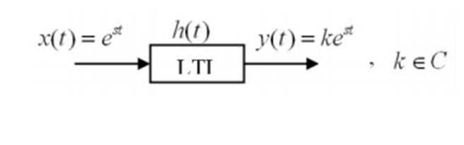
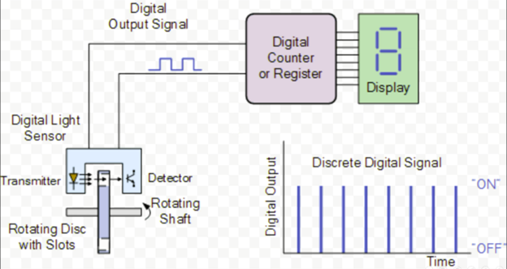
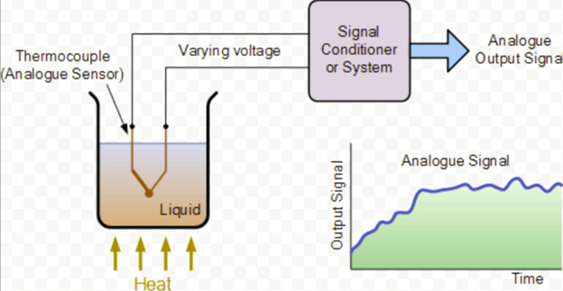

Linear Time Invariant System#
Time-Invariant System:#
For example, if you give your friend chocolate and they smile, and you repeat the same action the next day with the same result, you can conclude that your friend is a time-invariant system.
Homogeneous System:#
An example of this is a sound amplifier: if you input a signal, it produces an output, and if you increase the amplitude of the input signal, the output amplitude increases proportionally.
Additive System:#
Linear System:#
If a system is both homogeneous and additive, it is called a linear system.
Example:
A continuous-time linear system \( S \) with input \( x(t) \) and output \( y(t) \) is described by the following input-output relationship:
a) Compute the output for \( x_1(t) = \cos(2t) \).
b) Compute the output for \( x_2(t) = \cos(2(t-\frac{1}{2})) \).
Solution:
a)
Since the system is linear:
Thus:
b) We know:
Using linearity:
LTI System:#
The study of signals and systems focuses on linear and time-invariant systems, referred to as LTI systems (Linear Time-Invariant).
We had it in the previous section,
Applying the system’s linearity and time-invariance properties to this input, the output \( y(t) \) is:
Thus, the output is the convolution of the input coefficients \( x(k\Delta) \) and the system’s impulse response \( h_\Delta(t) \), scaled by \( \Delta \).
Applying the system’s linearity and time-invariance properties to this input, the output \( y(t) \) is:
As the time steps \( \Delta \) become infinitesimally small, the sum transitions into an integral, leading to the following expression for the output:
Thus, the output becomes the convolution of the input signal \( x(t) \) and the system’s impulse response \( h_\Delta(t) \), in the limit as \( \Delta \to 0 \).
Example:
Consider a discrete-time LTI system with the following impulse response:
Show that the system’s step response is:
Solution:
Eigenfunctions of LTI Systems:#
If an exponential input \( e^{st} \) (where \( s \) is a complex number) is applied to an LTI system, the output will have the same form but with different amplitude and phase. Thus, \( e^{st} \) functions are eigenfunctions of continuous-time LTI systems.

Example:
Which of the following signals are eigenfunctions of continuous-time LTI systems?
Solution:
The signal \( x(t) \) is not an eigenfunction for continuous-time LTI systems because:
Thus, the output is not in the form \( y(t) = H(s)x(t) \).
The signal \( g(t) \) is an eigenfunction because it is in the form \( e^{st} \).
Introducing a few examples of the system#
The system is shown that converts rotational motion into an electrical pulse.

The system is shown that converts heat into a current.

Conclusion#
In the real world, Linear Time-Invariant (LTI) systems do exist, but they are typically an idealization or approximation of real-world systems. LTI systems are widely used in engineering, physics, and signal processing because they are mathematically tractable and can simplify the analysis of complex systems.
Limitations of Real-World LTI Models:
Non-linearity: In real-world systems, there are often non-linearities that emerge, especially when inputs are large or components reach their operational limits. Time Variance: Some systems, like electronic devices that experience aging, or mechanical systems subject to varying environmental conditions, will exhibit time-varying behavior that makes them non-time-invariant.
Why LTI Systems Are Useful:
Mathematical Simplicity: LTI systems are easier to analyze mathematically because they can be described using simple tools like Fourier transforms, Laplace transforms, and convolution. Approximation: Many real-world systems behave approximately as LTI systems over certain time periods or operating conditions, allowing engineers to design and analyze these systems effectively.
A few real-world examples where Linear Time-Invariant (LTI) systems provide a good approximation:
1. Electrical Circuits#
RC (Resistor-Capacitor) Circuits: An RC circuit, which consists of a resistor and a capacitor, can be modeled as an LTI system. The response to an input signal, such as a step function or sinusoidal signal, can be predicted by using linear differential equations. For small signals, where the components behave linearly (i.e., resistors follow Ohm’s Law, capacitors store energy in a linear fashion), this system is time-invariant as long as the components’ properties do not change over time.
Example: A simple low-pass or high-pass filter made with resistors and capacitors can be described as an LTI system because the output (voltage across the resistor or capacitor) is linearly related to the input, and the system’s behavior does not change over time.
2. Audio Signal Processing#
Equalizers and Filters: In audio systems, equalizers and filters (e.g., low-pass, high-pass, band-pass filters) are often designed as LTI systems. When you apply a sound signal to a filter, the output signal is linearly related to the input, and the system’s characteristics (like the filter’s frequency response) remain the same over time.
Example: The equalizer on an audio device that amplifies or attenuates different frequency ranges based on preset or user-defined values is an example of an LTI system, as the system behavior is fixed and linear.
3. Control Systems#
Temperature Control Systems: Many temperature regulation systems, like those in thermostats, can be approximated as LTI systems. If the input is a desired temperature (setpoint), the system responds by adjusting the heater or cooling system output linearly. As long as the physical components (like the heater or cooler) behave linearly and the system’s parameters remain constant, it can be considered time-invariant.
Example: A heating system in a house where the temperature increases proportionally to the power applied and remains steady over time under constant settings can be modeled as an LTI system.
4. Mechanical Systems#
Mass-Spring-Damper Systems: A mass-spring-damper system, which consists of a mass, a spring, and a damper, is a well-known example of an LTI system. The system’s response to a force applied to the mass (such as displacement or velocity) is linear as long as the system operates within elastic limits and does not experience large deformations (where non-linear behavior might appear). The system’s damping force is often proportional to the velocity, and the spring force is proportional to the displacement.
Example: The suspension system of a car, where the displacement of the shock absorbers is linearly related to the input forces (like bumps in the road), is a common approximation to an LTI system.
5. Optical Systems#
Lenses and Optical Filters: In optical systems, lenses and optical filters that modify the intensity of light passing through them can be modeled as LTI systems. The relationship between the input (light intensity, wavelength) and the output (light passing through the system) is linear, and if the system’s properties (like the lens’ focal length) do not change over time, the system can be considered time-invariant.
Example: An optical filter that attenuates light at certain wavelengths while leaving other wavelengths unchanged can be modeled as an LTI system, as the filter’s characteristics remain the same over time.
6. Mechanical Vibrations in Structures#
Building Vibration Response: The vibration response of a building or bridge to forces like wind or earthquakes can often be modeled as an LTI system. The system’s response to a given input (like a shock or periodic load) is linear, and as long as the physical properties of the building (such as stiffness and damping) remain constant, the system is time-invariant.
Example: The oscillations of a suspension bridge in response to periodic wind loads can be approximated by an LTI model, where the output (vibration displacement) is linearly related to the input forces (wind load).
7. Communication Systems#
Radio and Telephone Systems: In ideal conditions, radio and telephone systems that transmit signals over a channel (e.g., through air or wires) can be treated as LTI systems. The channel’s response to different frequency components (such as noise, distortion, or attenuation) is linear, and if the channel conditions do not change with time, the system is time-invariant.
Example: The filtering and amplification of radio signals in a communication system can be modeled as an LTI system, where the output signal is the convolution of the input signal with the system’s impulse response.
8. Signal Amplification#
Operational Amplifiers: In analog electronics, operational amplifiers (op-amps) are often used in linear circuits. When configured as amplifiers, filters, or integrators, they can be considered LTI systems under ideal conditions.
Example: An op-amp-based low-pass filter that amplifies the input signal without introducing any time-varying behavior can be modeled as an LTI system.
LTI system and Machine Learning#
In Machine Learning (ML), Linear Time-Invariant (LTI) systems may not always be directly applicable to the real world since many machine learning models involve nonlinearities or time-varying behavior. However, there are certain ML algorithms and models where LTI principles can provide useful approximations or play a role in understanding the dynamics. Here are a few examples:
1. Linear Regression#
Description: In linear regression, the relationship between input features and the target is assumed to be linear, making it a good candidate for an LTI system in terms of its behavior with respect to changes in input features. The model does not change over time (i.e., the system is time-invariant) unless retrained with new data.
Example: Predicting house prices based on features like size, location, and number of bedrooms. If the relationship between input features and the target is linear and remains constant, the model behaves like an LTI system.
2. Convolutional Neural Networks (CNNs) for Image Processing#
Description: In image processing tasks like object detection or classification, Convolutional Neural Networks (CNNs) often use filters or kernels that can be thought of as a form of convolution, which is a key operation in LTI systems. The application of a convolutional filter to an image can be modeled as a linear operation, where the output is a weighted sum (or linear combination) of the input pixels, and the filter is time-invariant in the sense that it doesn’t change unless retrained.
Example: In image classification, applying a convolutional layer to an image using a fixed kernel can be considered an approximation of an LTI system because the convolution process is linear and time-invariant as long as the kernel remains fixed during the forward pass.
3. Kalman Filters (in Time Series Forecasting)#
Description: Kalman filters are used in time series forecasting and state estimation, particularly when dealing with noisy observations. Although Kalman filters are not strictly LTI systems, they operate in a manner that closely resembles the behavior of an LTI system, especially when the system dynamics and measurement models are linear and time-invariant.
Example: In robot navigation or object tracking, a Kalman filter is used to predict the state (position, velocity, etc.) of an object over time. The system’s dynamics (such as motion equations) and measurement models (such as sensor readings) are linear and time-invariant, making Kalman filters a good example of an LTI-like system in ML applications.
4. Autoencoders for Dimensionality Reduction#
Description: Autoencoders are neural networks used for unsupervised learning, often for dimensionality reduction or denoising. The encoder-decoder structure used in autoencoders can be considered an LTI system when the weights are fixed (i.e., no training is happening) and the transformation is linear.
Example: In a simple autoencoder with linear activations (like PCA), the transformation from the input space to the latent space and back is linear, which is analogous to an LTI system. In this case, the transformation of data is a linear combination of the input features, and the system is time-invariant if the weights do not change.
5. Principal Component Analysis (PCA)#
Description: PCA is a technique for reducing the dimensionality of data by finding the principal components (eigenvectors) that explain the maximum variance in the data. When the data and transformation are linear (i.e., no nonlinearities or changes over time), PCA can be thought of as an LTI system.
Example: If you apply PCA to a dataset of image features, the transformation is linear, and the principal components remain constant for the dataset, making the system time-invariant. The output is a projection of the input data onto a lower-dimensional subspace, which is analogous to a filtering operation.
6. Support Vector Machines (SVMs) with Linear Kernels#
Description: A Support Vector Machine (SVM) with a linear kernel can be considered an LTI system because the classification boundary is a hyperplane, which is a linear function of the input features. The system’s behavior does not change over time unless retrained with new data, making it time-invariant.
Example: A linear SVM used for binary classification, such as classifying email as spam or not, works by finding a linear decision boundary between the two classes. The system’s behavior is linear and time-invariant as long as the decision boundary remains fixed.
7. Recurrent Neural Networks (RNNs) with Linear Activation#
Description: While Recurrent Neural Networks (RNNs) are typically used for time-series and sequential data, if the activation functions and dynamics of the RNN are linear, it can be viewed as a time-invariant linear system. RNNs with linear activation functions (such as linear units or tanh without nonlinearity) approximate an LTI system.
Example: A simple RNN used for forecasting a time series, where the system dynamics (the weights) do not change over time, can be considered an LTI system in the case of a linear activation function.